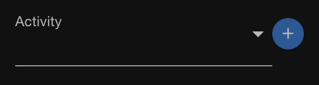
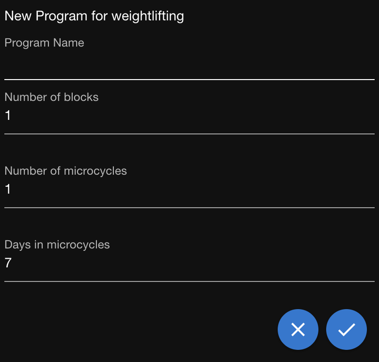
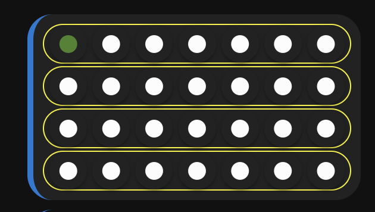
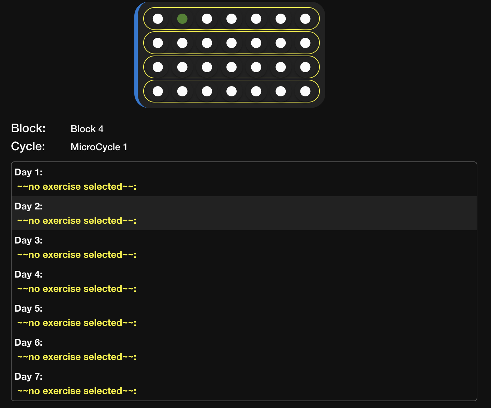
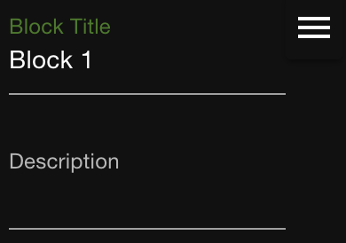
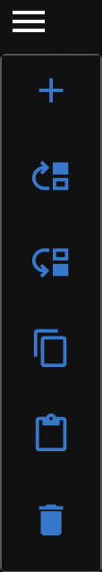
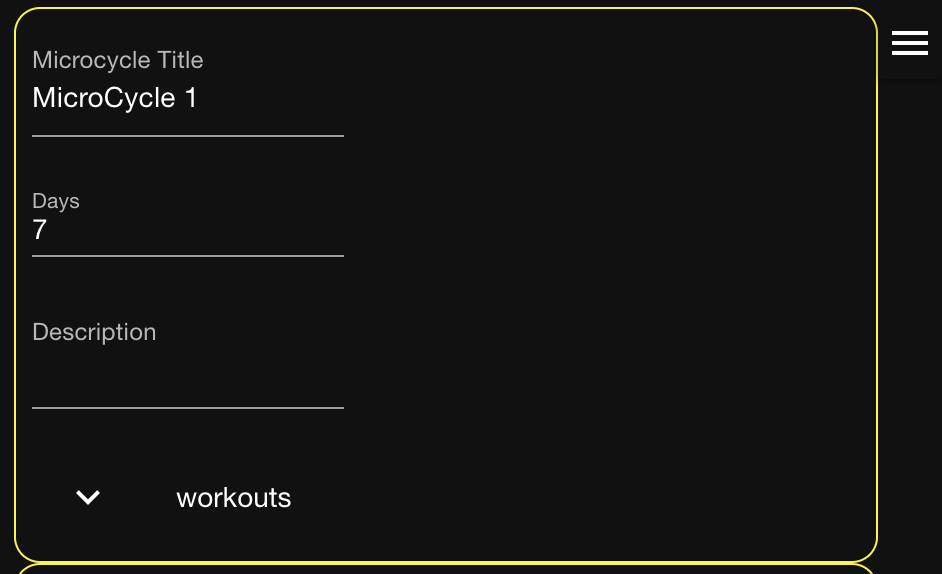
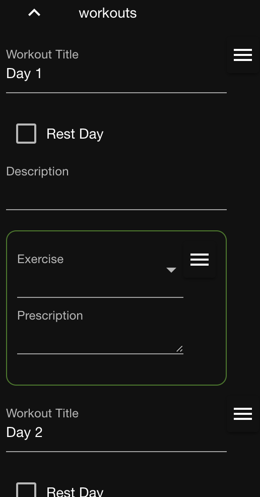
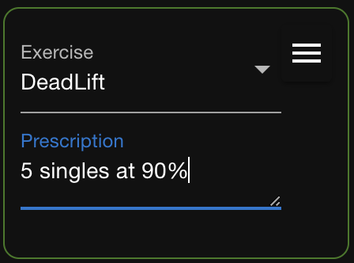

Plan workouts using programs
If you follow a training program you can enter it into HomeGym and later execute it as needed.
Programs are organized into blocks that contain microcycles. Blocks are larger phases of training that you progress through such as the base, build, peak, and taper phases of marathon training. Each microcycle contains a number of workouts. Typically, a microcycle represents a training week and contains seven workouts.
Once you've entered a program you can execute it as many times as you need to. See Execute Programs.
Create a program
Creating a program is done in two phases:
- First, you establish the structure of the program, i.e. the number of blocks, microcycles, and workouts.
- Second, you add the details of each block, microcycle, and workout.
- On the Menu bar, click Program.
 - Select the activity for which you are creating the program and then click the + icon.

 - Enter a unique name for the program.
- Enter the number of blocks, the number of microcycles in each block, and the number of workouts in each microcycle. 5. Click the check mark icon to save the program.
A program is created using the structure that you prescribed. You can now explore the program and enter the details.
Explore the program
- Select the program in the Programs drop down.
- Each grouping of rows of dots represents a program block. Each row is a microcycle and each dot is a workout.
 - Below the blocks is a view of a microcycle. The details are filled with generic content that you will change.
 - To see a microcycle, click one of the dots in the row that represents the microcycle. Notice that the dot you clicked is green and it represents the highlighted workout in the view.
Edit the program details
- Click the pencil icon next to the program blocks.

- Change the title of each block and, optionally, add a description.

A hamburger icon appears next to each item in a program (blocks, microcycles, workouts, and exercises). Use these menus to alter the list of items as needed. You can change the order of items, delete and add items, and copy and paste items.
 - Change the title of each microcycle in the first block and, optionally, add a description.
 - Expand the workouts for the first microcycle.
 - For each workout:
- Change the title and, optionally, add a description.
- To indicate there is no workout, select Rest Day. Otherwise, continue with the next step.
- Select the first exercise to perform in the workout and describe the volume and load.
 - To add another exercise, click the hamburger icon for the first exercise and then click the + icon.
- Configure the exercise and add more as needed.
Clone a program
Clone a program when you want to create a new program that is similar to an existing one. Cloning saves time when you need to adjust only a few properties after cloning.
- Select the activity of the program you want to clone.
- Select the program to clone in the Programs drop down.
- Click the Clone button.
- Enter a name for the clone.
- Click Done.
The clone is saved while the original program remains open.